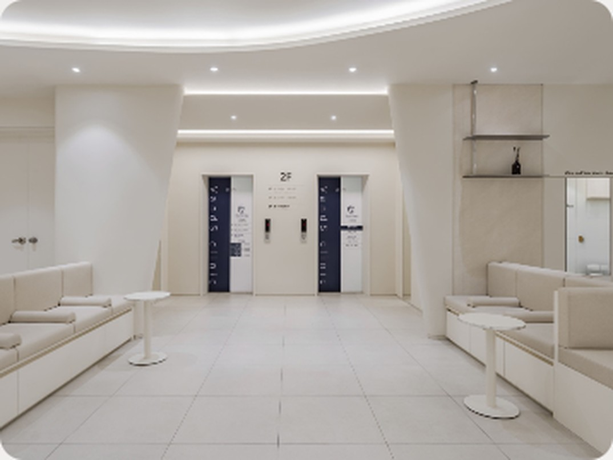
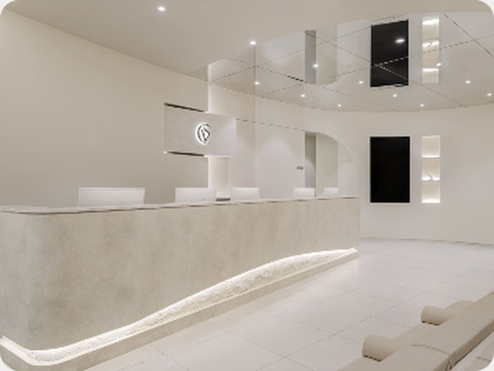
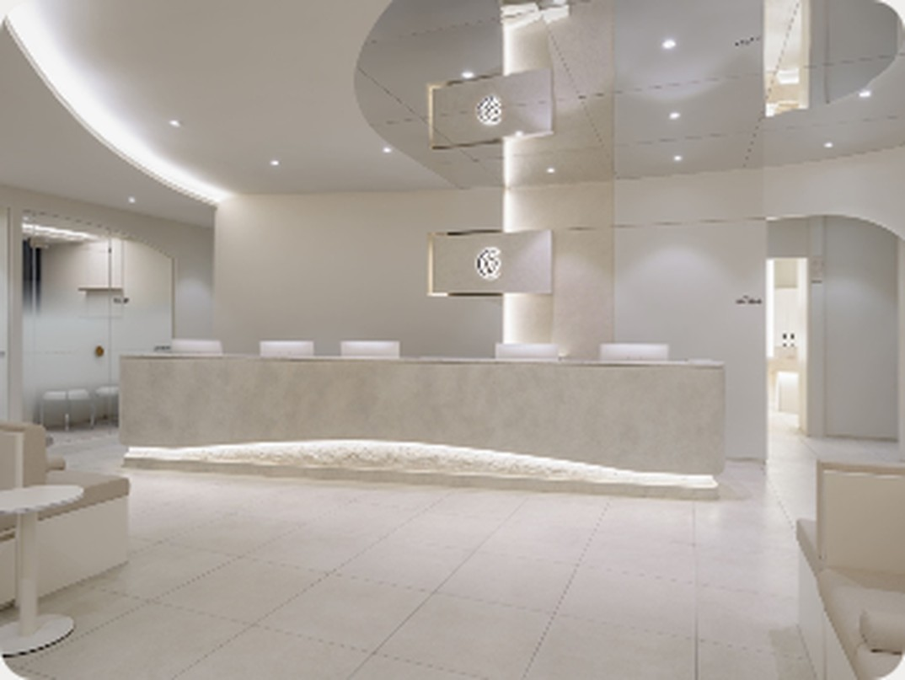

시술레이저 리프팅 · 필러
진료평일 20시까지 · 토·일
위치서면역 7번 출구

#의료진 직접 상담
레이저 리프팅, 깊이부터 설계
Laser lifting, planned layer by layer
for your skin thickness and contour.
게시 예약 · 내일 오전 10:00
밴스의원 부산점 · 서면역 7번 출구 · 평일 20시까지
#의료진 직접 상담
레이저 리프팅, 깊이부터 설계

VANDS MAGAZINE
얼굴에
볼륨감이 필요할 때.
Q & A
보톡스와
윤곽주사,
무엇이 다를까?
밴스의원 부산점

VISIT
서면역 7번 출구
평일 20시까지
리프팅 후
세안은
언제부터?
시술 후 관리 안내
SEASON CARE
환절기,
보습부터.
GUIDE
처음 오시는
분께
상담 · 예약 순서
WEEKEND
토·일에도
진료합니다
시술 이야기
확인된 정보로 인스타그램·블로그 글을 만들고, 점검·승인된 것만 예약 게시합니다가상 시연 · 실제 계정·게시가 아닙니다